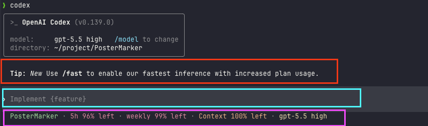
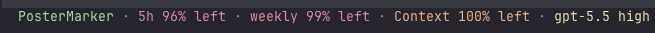

📚 系列导航：上一篇 07 桌面 App 全景 带你把图形界面那套点法摸熟了——看 diff、并排跑任务、可视化审批。这一篇调头钻进终端，搞懂
codex这条命令到底怎么用：命令结构怎么拆、交互界面长啥样、常用选项和斜杠命令各管什么。下一篇 09 IDE 扩展（VS Code 等） 再把它塞进编辑器里。
都说「图形界面对小白最友好，能不碰命令行就别碰」——但说句实话，这话用在 Codex 身上，得打个对折。
我自己俩入口都用了小半年，结论很明确：桌面 App 适合「看」，CLI 适合「干」。你要可视化盯着每一处改动、同时摆开五个任务并排比较，桌面 App 确实爽。可一旦你想把 Codex 接进自己的工作流——写个脚本让它每天自动审一遍代码、在没有图形界面的云服务器上跑、或者干脆塞进 CI 流水线——这些桌面 App 一个都办不到，全得靠 CLI。
更反直觉的一点：CLI 的「黑窗口」其实没那么黑。Codex CLI 启动后不是让你对着一行光标干瞪眼，而是进了一个叫 TUI（Terminal User Interface，终端用户界面）的全屏交互界面——有对话区、有输入框、有状态栏，跟桌面 App 的信息密度差不太多，只是全用键盘操作。我第一次开它的时候还愣了一下：这哪是命令行，这分明是个「长在终端里的 App」。
所以这一篇不劝退、也不神化。它只干一件事：把 codex 这条命令彻底讲透，让你从「不敢敲」到「敲得顺」。
看完这一篇，你会拿到：
- 一张
codex命令结构图——一条命令拆成哪几块、子命令和选项分别长在哪 - 交互式 TUI 的三块分区（对话区 / 输入框 / 状态栏）各看什么、怎么操作
- 一份最该记的常用选项速查表（
--model、--sandbox、--cd、--search、-i……），全部对照官方cli/reference核对过 - 几个天天用的斜杠命令和键盘动作，外加一个能照着跑的最小验证流程
- 交互式（盯着干）和
exec（一句话跑完）两种跑法的分界线，知道啥时候用哪个
⚠️ 下文凡涉及具体命令、选项、默认行为，都以 Codex 官方文档 为准；模型名、套餐这类随版本变的东西，看到时以你本地实际显示为准，本篇不写死。
01 先把 codex 这条命令拆开看
很多新手怕命令行，不是怕敲字，是怕那一长串带横杠的东西不知道哪个是哪个——codex exec --sandbox workspace-write --model xxx "干点啥"，看着像天书。
其实结构特别规整。先给结论：codex 这条命令，最多就四块拼起来——主命令、子命令、选项、提示词。认住这四块，再长的命令你都能一眼拆开。
类比：在咖啡馆点一杯定制咖啡。 codex 是你走进店里喊的那声「来杯咖啡」（主命令）；要不要换成「冰美式」还是「拿铁」，那是子命令（exec、resume、cloud……换一种喝法）；「少冰、加一份浓缩、燕麦奶」这些附加要求是选项（带 -- 的那些）；最后你想让它干的活——「帮我看看这段代码」——就是提示词。一句话四个部分，缺哪个都行，但顺序是固定的。
拆开长这样：
codex [子命令] [选项...] ["提示词"]
│ │ │ │
主命令 换跑法 调参数 要干的活
逐块说清楚：
- 主命令
codex：装好之后终端里就有这条命令了。光敲codex回车，进的是交互式 TUI。 - 子命令：换一种「跑法」。比如
codex exec是非交互式跑（一句话跑完就退出，不进界面）、codex resume是接着上次的会话聊、codex login是登录。不写子命令，默认就是进交互界面。 - 选项（flag）：带
--或-的开关，用来调参数。比如--model换模型、--sandbox调沙箱、--cd换工作目录。大部分选项有长短两种写法（--model等于-m）。 - 提示词：用引号裹起来的一句话，是你这次想让它干的活。可写可不写——不写就进界面慢慢聊，写了它就直接拿这句话开干。
几个你立刻能上手的例子，从简单到复杂：
# 啥都不带，进交互界面
codex
# 带一句提示词，进界面后它直接开干
codex "解释一下这个项目的结构"
# 换个模型 + 指定工作目录
codex --model gpt-5.5 --cd ~/my-project "把 README 补全"
⚠️ 上面
gpt-5.5只是个示意。具体有哪些模型名、哪个是当前推荐，随版本变得很快，敲/model看你本地实际列出来的就行，别照抄写死的型号。
看出来没——再花哨的命令，也就是这四块的排列组合。后面所有用法，都是往这个骨架上填东西。
💡 一句话总结：
codex命令就四块——主命令 + 子命令（换跑法）+ 选项（调参数）+ 提示词（干啥活），认住这个骨架，天书秒变填空题。
02 进了交互界面，先认住这三块
光敲 codex 回车，弹出来的就是 TUI。第一次见这一屏新手容易发懵：哪儿是我说话的地方？它干到哪一步了？
别慌，跟桌面 App 一个道理，你只需要认住三块：对话区、输入框、状态栏。其余滚动的内容都是它在「跟你汇报」，扫一眼就行。
类比：看直播带货的画面。 中间一大片是主播在演示（对话区，Codex 在这儿讲它的计划、贴代码、显示 diff）；最底下那条输入框是你打字发弹幕的地方（输入框，你所有指令从这儿进）；屏幕角落那行小字显示「在线人数、当前商品」（状态栏，显示当前模型、上下文用了多少、在哪个目录）。你看直播不用盯满屏，认住这三块就跟得上节奏。

逐块拆开：
- 对话区（中间最大那片）：Codex 的「主场」。它在这儿一步步讲它要干啥、贴出改动的代码块和 Git diff，而且代码和 diff 都带语法高亮（官方特意做的，看着不费眼）。你审它改了什么，主要看这儿。
- 输入框（最底下）：你跟 Codex 说话的唯一入口。打字、贴代码、贴截图、敲斜杠命令，全在这一行。
- 状态栏 / 页脚（贴着输入框那几行小字）：显示会话的关键读数——当前用的哪个模型、上下文窗口还剩多少、当前工作目录、Git 分支等。官方还提供了
/statusline让你自己挑要显示哪些字段、怎么排序，看不顺眼可以调。
这里插一个新手必踩的坑，提前给你打预防针：屏幕突然花了、或者一半空白。别以为它崩了。最常见的是你在 tmux 里跑 Codex，切窗口回来满屏乱码，看着像挂了想重启——其实按一下 Ctrl+L 就干净了，它强制重绘屏幕，对话不会丢。
我去年在一台 SSH 连过去的服务器上跑 Codex，网络抖了一下整个界面错位，当时差点 Ctrl+C 杀掉重来，幸好想起来这个键，一按就恢复了——要是真重启，那一长串上下文就白攒了。
不过这里有个 Codex 特有的、容易和 Ctrl+L 搞混的点，得说清楚：
Ctrl+L 只清屏幕、不动对话，会话照旧；而斜杠命令 /clear 是清屏幕外加开一段全新对话——上下文一起清空。一个是「擦黑板」，一个是「换张新黑板」，别按错。
💡 一句话总结：TUI 认住「对话区看它干啥、输入框你说话、状态栏看读数」三块就够开工；屏幕花了按
Ctrl+L重绘（对话不丢），别跟清空对话的/clear搞混。
03 最该记的常用选项：八个就够日常
选项（flag）是 CLI 的灵魂，但官方 cli/reference 那张表列了几十个，全背没必要。我按自己的实际使用频率挑了八个新手日常真会用到的，其余的用到再查。
类比：相机的几个常用旋钮。 一台单反几十个按钮，但你 90% 的时间就拧那么几个——光圈、快门、ISO。选项也一样：先把高频的这几个用顺，剩下的当「专业模式」，需要了再翻说明书。
下面这张表，全部对照官方 cli/reference 核对过：
| 选项（长 / 短） | 干啥用 | 举个例子 |
|---|---|---|
--model / -m |
临时换一个模型跑这次 | codex -m gpt-5.5 "重构这个函数" |
--sandbox / -s |
选沙箱策略（read-only / workspace-write / danger-full-access） |
codex -s read-only "只帮我审一下别动手" |
--ask-for-approval / -a |
选审批时机（untrusted / on-request / never） |
codex -a on-request "修一下这个 bug" |
--cd / -C |
不用先 cd，直接指定工作目录 |
codex --cd ~/proj "讲讲这项目" |
--add-dir |
额外再放开一个可写目录（可重复） | codex --cd app --add-dir ../shared |
--image / -i |
把图片（截图 / 设计稿）一起喂给它 | codex -i error.png "这报错咋回事" |
--search |
这次开启「实时联网搜索」 | codex --search "用最新的 API 写" |
--oss |
改用本地开源模型（需要本机跑着 Ollama） | codex --oss "离线帮我写个脚本" |
几个值得单独点一句的：
--cd 是我用得最顺手的一个。 以前我要在某个项目里开 Codex，得先 cd 进那个目录再敲 codex，两步。后来发现 codex --cd ~/某项目 "..." 一步到位，工作目录直接定到那儿，启动后 TUI 顶部还会显示当前路径，不怕搞错地方。
--sandbox 和 --ask-for-approval 这对，是控制「它能动多大、动手前问不问你」的核心开关。 这俩在第 02 篇「核心概念」里已经掰开讲过了（沙箱管能不能、审批管问不问），这里你只要知道在命令行能临时指定它俩就行。官方给的低风险日常组合是 --sandbox workspace-write 配 --ask-for-approval on-request——围栏锁着、要出圈才问，安全又不烦。它们具体每档啥含义、怎么持久化进配置，第 15 篇「权限、沙箱与审批」专门展开，本篇不重复。
--search 默认走缓存：Codex 本地默认就开着网页搜索，只是用 OpenAI 维护的预索引缓存结果（降低被恶意网页注入的风险）；加 --search 这一次就切到实时。 你要最新数据，单次加 --search 就从缓存切到实时联网。注意：不管缓存还是实时，搜来的网页内容都该当成不可信来源看待。
那个最危险的开关也得提一句、但别急着用：
⚠️
--dangerously-bypass-approvals-and-sandbox（别名--yolo）会绕过所有审批和沙箱，每条命令都直接跑、不拦不问。官方原话是「只在已经做好外部隔离的环境里用」。新手阶段当它不存在——你还没到需要它的时候，误用一次可能就让 Codex 在你整台机器上撒欢了。
💡 一句话总结：八个高频选项先用顺——
-m换模型、-s/-a调权限、--cd/--add-dir定目录、-i喂图、--search联网；--yolo这种危险开关新手当它不存在。
04 斜杠命令：会话里的「遥控器按钮」
选项是启动前在命令行敲的；进了交互界面之后，你想中途调点啥，靠的是斜杠命令（slash command）——在输入框打一个 / 就弹出一长串。
类比：电视遥控器上的功能键。 电视开着的时候，你不会关机重开去换台、调音量——抬手按遥控器就行。斜杠命令就是 Codex 会话的遥控器：不退出、不重启，输入框打个 / 当场调整。换模型、改权限、清上下文、看改动……都是按一下的事。
官方内置了一大把（/ 打出来自己翻），新手阶段先把下面这几个焊进肌肉记忆，其余的用到再说：
| 斜杠命令 | 干啥用 | 啥时候按 |
|---|---|---|
/model |
当场切换模型（和推理强度） | 想换个更强 / 更快的模型时 |
/permissions |
切换审批模式（Auto / Read Only / Full Access） | 想放开或收紧它的动手权限 |
/status |
看当前会话信息（模型、审批策略、可写目录、上下文余量） | 不确定现在啥配置时，先看一眼 |
/diff |
看 Git diff（含还没被 Git 跟踪的新文件） | 提交前审一遍它到底改了啥 |
/compact |
把长对话压缩成摘要，腾出上下文 | 聊太久、上下文快满了 |
/review |
让一个独立的审查代理审你的改动 | 写完想找「第二双眼睛」把关 |
/init |
在当前目录生成 AGENTS.md 脚手架 |
想给项目立规矩、让它记住约定 |
/clear |
清屏并开一段全新对话 | 想彻底换个话题、从头开始 |
这里有个 Codex 挺贴心的细节，官方文档专门写了：任务正跑着的时候，你可以先把下一条指令或斜杠命令打好，按 Tab 排进队列，等这一轮跑完它自动接着处理——不用干等。我经常在它跑测试的间隙，先把 /review 用 Tab 排好队，它一跑完审查无缝衔接，省了来回切的工夫。
注意：斜杠命令体系内容很多（光内置的就几十个，还能自定义），上面只是日常最常用的一小撮。完整的斜杠命令清单、自定义命令怎么写，第 12 篇「斜杠命令与快捷键」专门展开，本篇你只要知道「
/是会话遥控器」、记住上面这几个救急的就够了。
💡 一句话总结：进了界面靠斜杠命令当遥控器，
/model换模型、/permissions调权限、/status看状态、/diff审改动是日常四大件；跑着任务能用Tab把下一条命令排进队列。
05 几个天天用的键盘动作
斜杠命令之外，还有一小撮纯键盘动作，是日常操作 TUI 的「快捷键」。挑官方文档里明确写了、且新手每天会用到的几个，记死就行：
| 键盘动作 | 作用 |
|---|---|
Ctrl+C |
中断当前操作；也可用 /exit 关闭交互会话 |
Ctrl+L |
重绘屏幕（清屏但保留当前对话） |
↑ / ↓（上 / 下箭头） |
在输入框翻草稿历史（连之前贴的图片占位也能恢复） |
Ctrl+R |
反向搜索提示词历史，回车选中、Esc 取消 |
Ctrl+O |
复制 Codex 最近一条已完成的输出（等同 /copy） |
Tab |
任务跑着时，把下一条输入 / 斜杠命令 / ! 命令排进队列 |
Esc Esc（输入框为空时） |
退回去编辑你上一条消息，继续按可往前翻，回车从那点重新分叉 |
Ctrl+G |
在外部编辑器里写长提示词，写完带回输入框 |
两个特别值得单独说的：
! 前缀——不打扰 Codex，顺手跑个 shell 命令。 在输入框开头打 !，后面跟一条命令（比如 !ls、!git status），这条命令直接在你终端跑。官方说 Codex 会把它的输出当成「用户提供的命令结果」收进上下文，而且照样走你的审批和沙箱设置。它香在哪？想顺手看一眼仓库状态、又不想让 Codex 专门跑一趟烧 token——!git status 立等可取，而且 Codex 也「看到」了，下一句能接着这个状态聊。
!git status
Ctrl+G 开编辑器写长指令。 嫌在小输入框里写几十行的复杂需求憋屈？按 Ctrl+G，Codex 会打开 VISUAL 环境变量指定的编辑器（没设就用 EDITOR），你在里头从容写完保存，内容自动带回输入框。写那种带格式的长 prompt 时我基本都这么干，比在终端里硬敲舒服太多。
还有个 @ 前缀也提一句：在输入框打 @ 会触发工作区文件的模糊搜索，按 Tab 或回车把选中的路径塞进消息里——想精准点名某个文件时用它，省得用大白话描述「那个 auth 文件」它找错。
平台差异提醒：上面的键在不同终端 / 系统下个别可能行为略有差异，Codex 还提供了 /keymap 让你查看和自定义 TUI 快捷键绑定。键不顺手能改，但新手先把默认的用熟，别一上来就折腾配置。
💡 一句话总结：键盘动作里
!顺手跑命令、@点名文件、Ctrl+G开编辑器写长指令、Tab排队、Ctrl+O复制输出最常用；想改键有/keymap，但先用熟默认的。
06 动手：五分钟把 CLI 跑一遍
光看不练明天就忘。下面给一套最小验证流程，不依赖任何复杂项目，新建个空文件夹就能跑。打开终端跟着走。
还没装 Codex CLI？回第 03 篇「安装与登录」装好再来。装没装成功，一句
codex --version能看出来。
第一步：建个空目录，进去启动。
Mac / Linux 这么敲（Windows 用 PowerShell，把 mkdir -p 换成 mkdir）：
mkdir -p ~/codex-cli-demo && cd ~/codex-cli-demo
codex
预期：进入全屏 TUI，中间是对话区，最底下是输入框，贴着输入框有状态栏小字（显示当前模型、目录等）。
第二步：用 /status 看一眼当前配置。
在输入框打：
/status
预期：Codex 打印出当前会话的概况——用的哪个模型、审批策略是啥、有哪些可写目录、上下文还剩多少。心里先有个底，知道自己现在是什么配置。

社区的 token-tracker 工具也能以图形化方式呈现类似信息（见上图），显示项目名称、5 小时 token 剩余量、一周使用剩余量、上下文占比、当前模型等字段。
第三步：试 ! 顺手跑条命令。
在输入框开头打 !（顶格），后面跟命令：
!echo hello-codex-cli
回车。预期：终端直接打印出 hello-codex-cli，而且这条命令和输出被收进了对话上下文——证明 ! shell 模式生效了，全程没惊动 Codex 去「解释」。
第四步：试 ↑ 翻草稿历史。
输入框空着时，按一下上箭头 ↑。
预期：你刚才那条 !echo ... 被原样调回输入框。这就是草稿历史，重发指令不用重打。先清掉它。
第五步：试 /diff 看改动（顺便让它真干件活）。
先让它干点会改文件的小事：
新建一个文件 hi.txt，里面写一行 "hello from codex cli"。
它可能会停下来请求批准（取决于当前审批策略），同意即可。完事后打：
/diff
预期：Codex 列出 Git 视角的改动，包括这个还没被 Git 跟踪的新文件 hi.txt。这就是提交前审改动的标准动作。
第六步：退出。
/exit
预期：退出交互会话，回到普通终端。（按 Ctrl+C 也能中断 / 退出。）
跑完这六步，本篇讲的 TUI 分区、/status、! shell、草稿历史、/diff、退出，你就全亲手验证过一遍了。
⚠️ 小插曲：如果第五步它没停下来问、直接就建好了，说明你当前审批策略比较宽松（比如 Auto 档下在工作区内写文件本就不拦）——这不是 bug，正是第 02 篇讲的沙箱 + 审批在按规则放行。想看它「停下来问」那一下，用
/permissions切到Read Only再让它建文件就能复现。
💡 一句话总结：照着这六步亲手跑一遍，TUI 分区、
/status、!跑命令、↑历史、/diff审改动、/exit退出全过一遍肌肉记忆，比看十遍表都记得牢。
07 交互式 vs exec：盯着干，还是一句话跑完
最后讲一个 CLI 独有、桌面 App 给不了的本事，也是很多人选 CLI 的真正理由——非交互式跑法 codex exec。
前面六节讲的都是「交互式」：你敲 codex，进界面，跟它来回聊、审它的每一步。但有些活根本不需要你盯着——比如「每天早上自动审一遍昨天的提交」「在 CI 里让它跑测试并修好失败用例」。这种「一句话丢进去、跑完吐结果就退出」的场景，就是 exec（别名 codex e）的主场。
类比：点堂食 vs 点外卖。 交互式像堂食——你坐店里，菜一道道上、边吃边跟厨师反馈「这个再咸点」。exec 像点外卖——你下单（一句提示词），厨房关起门做完直接送到（结果打到 stdout），中间不用你在场。要盯着调整用堂食（交互式），要批量自动化用外卖（exec）。
最简单的样子：
codex exec "审查当前改动，列出潜在 bug"
它会读工作目录、定个计划、把最终结果流式打到终端，然后退出——不进 TUI、不等你按键。
exec 几个新手用得上的选项（同样对照官方 cli/reference）：
exec 选项 |
干啥用 |
|---|---|
--model / -m |
指定这次用哪个模型 |
--json |
输出按行的 JSON 事件（喂给脚本解析用） |
--output-last-message / -o |
把最终那条消息写到文件里 |
--skip-git-repo-check |
允许在非 Git 目录里跑（一次性目录方便） |
--ephemeral |
不把会话记录落盘 |
把交互式和 exec 摆一起对比，你就知道什么时候用哪个：
| 维度 | 交互式（codex） |
非交互式（codex exec） |
|---|---|---|
| 跑完会怎样 | 进 TUI，停在界面等你继续 | 吐完结果直接退出 |
| 适合的活 | 探索、调试、需要来回沟通的 | 脚本、CI、批量、定时跑的 |
| 要不要你在场 | 要，你审它每一步 | 不要，丢进去就走 |
| 输出形态 | 界面里可视化看 | 流到 stdout，可配 --json 给机器读 |
| 典型场景 | 「帮我重构这块，咱边改边看」 | 「每天自动生成 changelog」 |
我自己的真实用法：手头需要边看边调的活，老老实实开交互式；而像「跑全套测试再修好失败用例」这种又慢又长、修完我直接看结果的活，我写进一个脚本用 codex exec --sandbox workspace-write 挂着跑。官方还提了个 CI 里的实用搭配：--json 配 --output-last-message——前者给你机器可读的过程事件，后者捞一份最终的自然语言总结，两边都不耽误。
注意：
exec是为「无人值守」设计的，所以审批时机通常配never（没人在场点头）。这也意味着它默认更放得开，务必配合合适的沙箱策略，别在没隔离的环境里对着重要项目无脑exec。exec的脚本化、CI 集成是后面工程化章节的正题，本篇你先知道「有这么个非交互跑法、它和盯着干是两条路」就够了。
💡 一句话总结：交互式是「堂食」（盯着调、来回聊），
exec是「外卖」（一句话丢进去跑完就退）；要沟通用前者，要自动化 / CI / 批量用后者——这正是 CLI 比桌面 App 多出来的杀手锏。
08 小结
这一篇没教你怎么写需求（那是第 13 篇的事），专门把 codex 这条命令本身讲透了。
把核心收成一张表，揣兜里：
| 你想干嘛 | 怎么做 |
|---|---|
| 进交互界面 | 敲 codex（带提示词它直接开干） |
| 换模型 / 调权限（启动时） | --model / --sandbox / --ask-for-approval |
| 指定工作目录 | --cd <路径>（不用先 cd） |
| 喂图片给它 | -i <图片> |
| 会话里换模型 / 看状态 / 审改动 | /model / /status / /diff |
| 顺手跑条 shell 命令 | 输入框打 ! 开头 |
| 屏幕花了 | Ctrl+L（对话不丢） |
| 写长指令 | Ctrl+G 开编辑器 |
| 一句话跑完就退（自动化） | codex exec "..." |
你现在应该能：一眼把任意一条 codex 命令拆成「主命令 + 子命令 + 选项 + 提示词」；认出 TUI 的对话区、输入框、状态栏；用八个高频选项启动、用斜杠命令中途调整、用 ! 和 Ctrl+G 提速；还能分清「盯着干的交互式」和「一句话跑完的 exec」该在什么场合用哪个。
最该带走的一句话：CLI 不是「简化版桌面 App」，而是功能更全、还能接进自动化的那一个——黑窗口的门槛，一旦迈过去，你会发现它比图形界面能干的事多得多。
下一篇 〔09 IDE 扩展（VS Code 等）〕：命令行摸熟了，但你平时写代码大概率是泡在编辑器里的。下一篇就把 Codex 塞进 VS Code、Cursor 这些 IDE 里——侧边栏直接对话、改动直接在编辑器里看 diff，命令行那套能力，怎么不出编辑器就用上？咱们下篇接着聊。